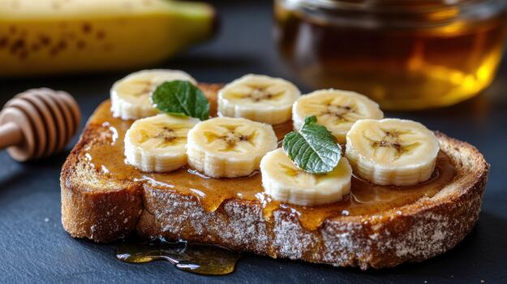

Odin Recipes | Banana Bread

Description
Banana bread is usually made with various add-ons like nuts or chocolate chips.
This is a base recipe that can be expanded and experimented upon.
Ingredients
- 2 whole eggs
- 2 cups all-purpose flour
- 1 tsp baking soda
- 1/4 tsp salt
- 3/4 cup brown sugar
- 1/2 cup butter
- 2 1/3 cups mashed bananas
Steps
- Preheat the oven to 350°F (175°C).
Grease a 9x5-inch loaf pan.
- Beat sugar and butter together until smooth.
- Add eggs and mashed bananas to the butter mixture until well-combined.
- In a separate bowl, combine flour, baking soda, and salt.
- Stir the two mixtures together.
- Bake for around 60 minutes. Check with a toothpick — it should come out clean.
- Let the bread cool.